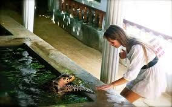
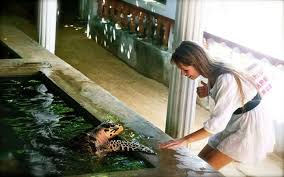

The Bentota Turtle Hatchery is located on the southwestern coast of Sri Lanka and is dedicated to conserving and protecting sea turtles. The hatchery also offers guided tours and educational programs for visitors.
ea turtles face numerous threats, including habitat destruction, pollution, climate change, and poaching. The Bentota Sea Turtle Hatchery plays a crucial role in mitigating these threats and promoting the survival of sea turtles.
The hatchery collects sea turtle eggs that are at risk of being destroyed or harvested for consumption. The eggs are then relocated to a protected area within the hatchery, where they can hatch safely. This relocation ensures that the eggs are not disturbed or stolen, increasing the chances of successful hatching.
The Bentota Sea Turtle Hatchery also engages in educational programs and awareness campaigns to promote the conservation of sea turtles. Visitors to the hatchery can learn about the various sea turtle species found in Sri Lanka, their life cycles, and the importance of protecting their habitats. By raising awareness and involving the local community, the project aims to foster a sense of responsibility towards sea turtle conservation.
WHAT CAN WE DO!
You can take guided tours of the hatcheries to understand the different species of sea turtles found in Sri Lanka.
During nesting season, you may have the opportunity to participate in the protection of sea turtle nests.
In some cases, turtle hatcheries relocate sea turtle eggs to secure hatcheries.
Turtle hatcheries often have educational exhibits and presentations that highlight the importance of sea turtle conservation.
 
